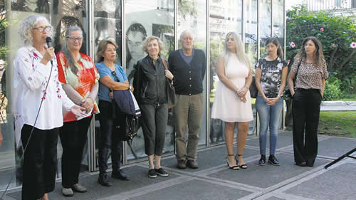

Real Chubut - Agencia de Noticias


"Ellos podían hacernos lo que quisieran"

La exposición presentada en el sitio de la memoria ofrece una mirada desde la perspectiva de género sobre los delitos de lesa humanidad. El testimonio de las sobrevivientes.
"En la ESMA hubo una asimetría de poder que posibilitó todas las vejaciones que sufrimos como mujeres." La que habla es la periodista y sobreviviente de ese centro clandestino Miriam Lewin. Lo hace ante un tribunal, en el marco de una de las tantas veces que dio testimonio por el secuestro, las torturas y las vejaciones que sufrió en ese centro clandestino. Le cuesta hablar de eso, pero sigue. Se esfuerza para que todos y todas en la sala tribunalicia entiendan que nada de lo que sufrieron ella y sus compañeras de cautiverio fue una casualidad o un exceso de algunos genocidas. "Nosotras éramos sus prisioneras y ellos podían hacer con nosotras, con nuestros cuerpos lo que quisieran. Eso fue lo que vivimos por el hecho de ser mujeres", aseguró entonces Lewin. El extracto de su testimonio se repite en loop junto al de otras sobrevivientes de ese encierro proyectados sobre la pared de una de las salas del casino de oficiales de la ex Escuela de Mecánica de la Armada, convertida desde hace algunos años en sitio de memoria. En la pared de otra sala, aparecen y desaparecen los nombres de todas las que pasaron por allí. Y más allá, más extractos de testimonios ploteados y aunados bajo el título que le da nombre a la nueva muestra temporaria del museo: Ser mujeres en la ESMA. Testimonios para volver a mirar.
La flamante exposición se integró ayer a la permanente que habita el casino de oficiales desde que fue convertido en espacio de memoria y reflexión sobre las violaciones a los derechos humanos que allí tuvieron lugar. La titular del museo, Alejandra Naftal, la definió como "un desafío" para el espacio. "Tomamos una interpelación del presente hacia el pasado", explicó. Y le hicieron frente a partir de un trabajo conjunto que integró a varias mujeres sobrevivientes del centro clandestino. Dos de ellas, Ana Testa y Graciela García, participaron de la inauguración y remarcaron la importancia de que el sitio hablara desde la perspectiva de género "por fin", insistió García.
"Es la tercera vez que piso este lugar desde que me liberaron. Me transpiran las manos", contó la Negrita, que fue secuestrada en 1976 y hasta 1982 sufrió "controles" de parte de la patota de la Armada. Fue ayer porque le pareció oportuno celebrar que "por fin" se empezaban a hablar de "cosas que son tabúes", como los delitos sexuales cometidos en la ESMA. Minutos antes, Testa había diferenciado las vivencias de las detenidas "más antiguas" de las que, como ella, habían llegado al centro clandestino desde 1979 en adelante. García apuntó que "siempre el propósito que tuvieron fue el de destruirnos. Y nos llevó muchos años reconstruirnos. No se salvó ninguna compañera y lo que es peor, luego a muchas las mataron. Algunas supieron cómo contarlo antes de desaparecer, otras enloquecieron", sostuvo. Las primeras vejaciones que sufrían eran las de los "verdes" en Capucha, un sector en el último piso del casino de oficiales en donde se acumulaban los y las detenidos. Golpes, toqueteos, duchas sin intimidad y algunos casos de violaciones, reconstruyó.
Ella, como varias otras sobrevivientes, empezaron a relatar los abusos ante la Justicia, en los juicios. Ella, particularmente, sufrió un acoso de Antonio Pernía mientras dormía en uno de los camarotes, y abusos sistemáticos de Jorge "Tigre" Acosta, que la sacaba del centro clandestino y la llevaba a un departamento los fines de semana donde la mantenía encerrada. "Esta fue mi parte. Muchas compañeras han sufrido antes durante y después toda la gama de violencia sexual imaginable de parte de una patota de asesinos y locos que hacían lo que querían con vos y tu familia. A muchas las mataron. Otras sobrevivieron y han relatado en los juicios lo que no les habían contado ni siquiera a sus maridos. Para mí, los juicios en ese sentido fueron reparadores."
La apertura también contó con la asistencia de miembros del Juzgado Federal de Instrucción 12, a cargo de Sergio Torres –quien también estuvo presente–, del equipo permanente del museo, de la abogada querellante en la causa Carolina Varsky y de investigadoras, entre tantas otras colaboraciones. García señaló a Torres como el único juez en la causa ESMA que diferenció a los delitos sexuales del resto de los crímenes de lesa humanidad.
Durante el tercer juicio que se llevó a cabo por los crímenes en ese centro clandestino, la fiscalía a cargo de Mercedes Soiza Reilly insistió para que se ampliara la acusación contra los represores por delitos sexuales, sin éxito. Según cifras actualizadas de la Procuraduría especializada en delitos contra la humanidad, solo el 12 por ciento de las sentencias emitidas hasta hoy incluye este tipo de delitos. Esos fallos reúnen los casos de solo 86 víctimas y afectan a 98 represores de los más de 800 condenados.
"Los crímenes de violencia sexual fueron silenciados incluso por las propias víctimas. La Justicia durante muchísimo tiempo no dio lugar para que pudieran hablar de esto. Pero de repente algunas empezaron a hablar de todos modos, entonces empezamos a ver la sistematicidad en el delito. Descubrimos que era el plus de la violencia ejercida sobre las mujeres dentro de los campos", mencionó ayer la fiscal, durante el recorrido por la muestra. La visibilidad de los crímenes en tanto tales, evaluó, "repercute de manera positiva en la reflexión tanto de la Justicia como de la sociedad civil sobre cómo hacemos para reparar a las víctimas del terrorismo de Estado y como hacemos para que no vuelva a ocurrir".
Después de un año y medio de trabajo, el equipo del Museo Sitio de Memoria ESMA llegó a la exposición que se inauguró ayer. A partir de testimonios, investigaciones y libros que se preguntaron sobre el plus de violencia que sufrieron sobre sus cuerpos y espíritus las mujeres que fueron víctimas del terrorismo de Estado, se pone de relieve la perspectiva de género en la violencia institucional y genocida desplegada en ese centro clandestino, sus efectos y las estrategias para afrontarlos y, en lo posible, repararlos.
La exposición comienza en el mismo punto de partida de la exposición fija del museo con una autocrítica. Por un lado, todas las palabras que generalizan con el masculino en el texto de apertura habitual aparecen subrayadas, marcadas con un círculo y señaladas hacia "a", "las", "as". Y al lado de ese texto aparece otro, nuevo, en el que se ofrece una explicación acerca del "silencio del guión museográfico acerca de la violencia sexual sobre las mujeres". Allí, el equipo del sitio apunta que la muestra temporaria Ser mujeres en la ESMA dialoga con esa aparte de la historia reciente de nuestro país que fue "omitida" de la lucha temprana por la memoria, la verdad y la justicia y luego, los primeros juicios de lesa humanidad.
Fuente: Pagina 12